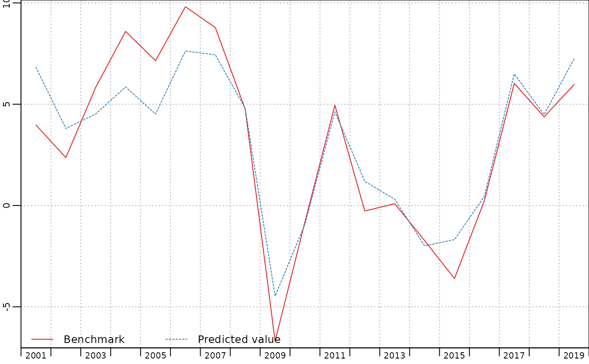

The function in_sample returns in-sample predictions from a praislm
or a twoStepsBenchmark object.
Value
a named matrix time series of two columns, one for the response and the other
for the predicted value.
A "tscomparison" class is added to the object.
Details
The functions plot and autoplot can be used on this object to produce
graphics.
The predicted values are different from the fitted values :
they are eventually reintegrated.
they contain the autocorrelated part of the residuals.
Besides, changes are relative to the latest benchmark value, not the latest predicted value.
Examples
benchmark <- twoStepsBenchmark(turnover,construction,include.rho = TRUE)
plot(in_sample(benchmark))
